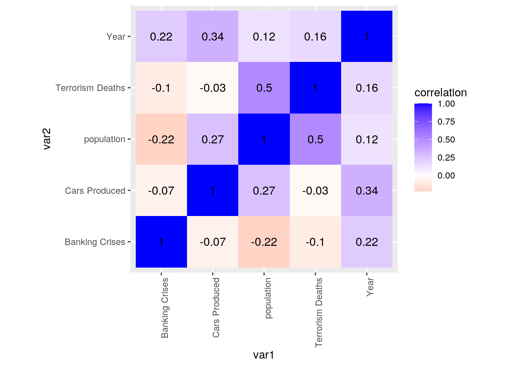
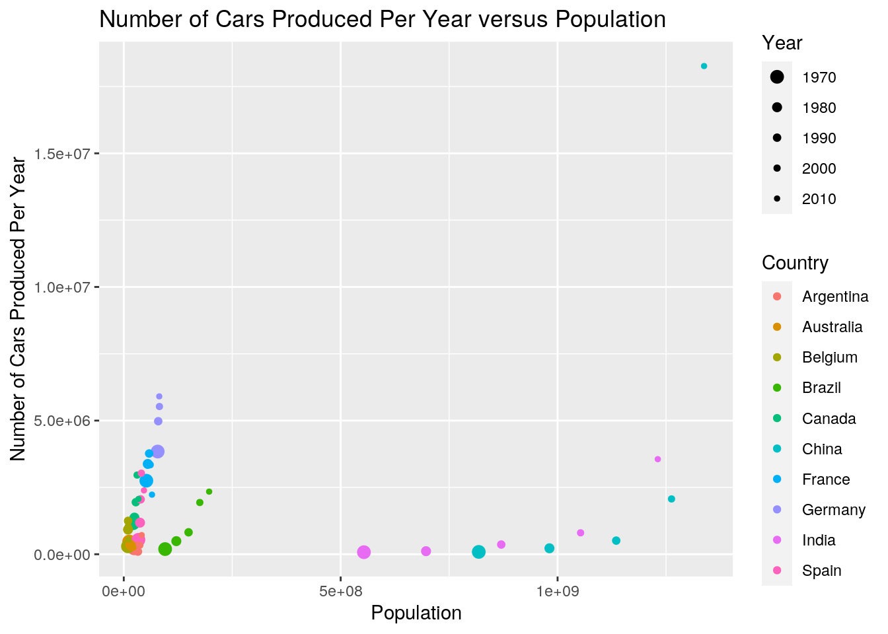
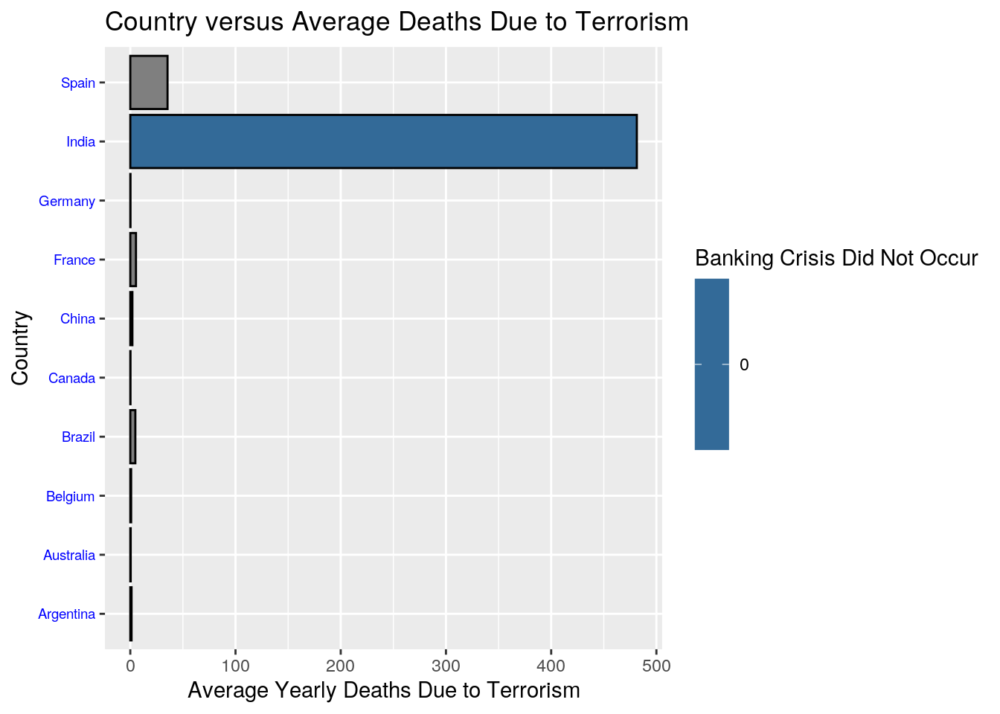
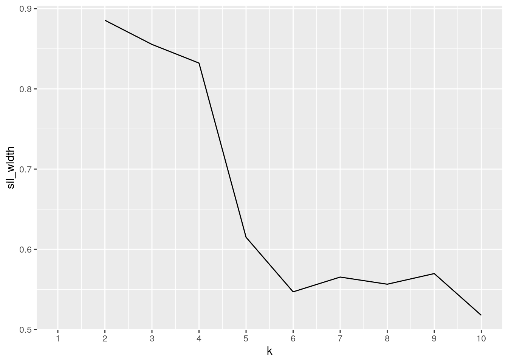
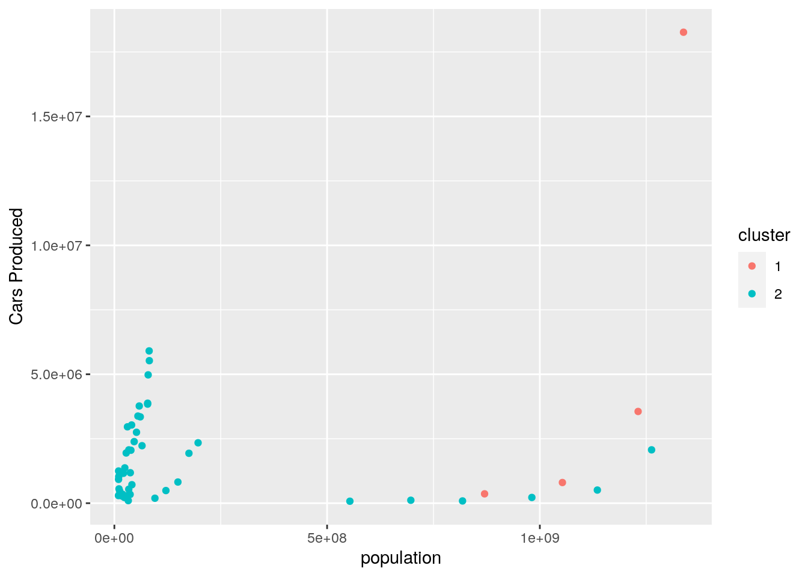
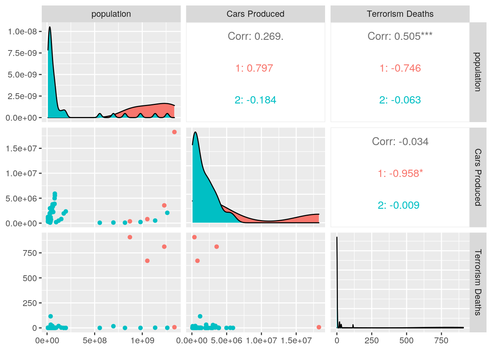
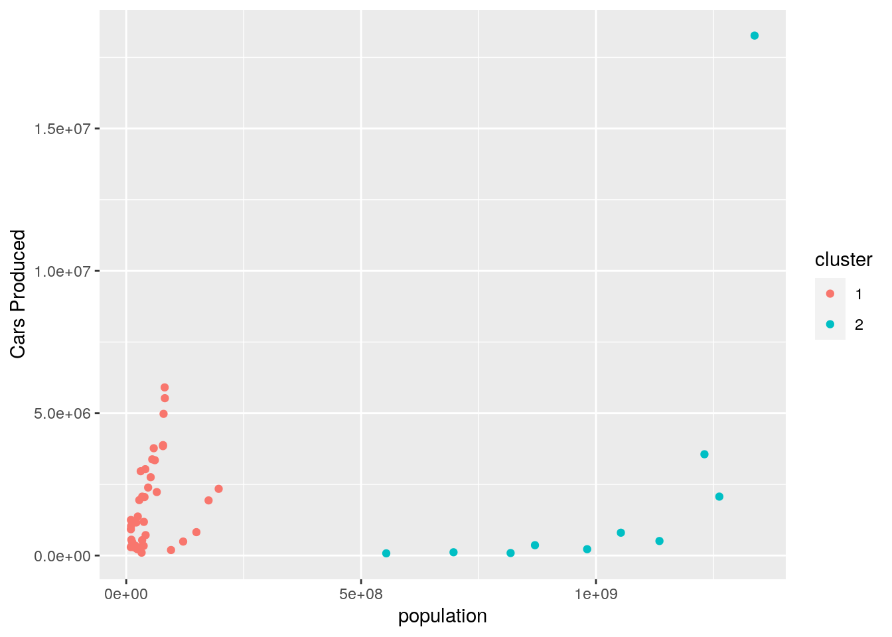
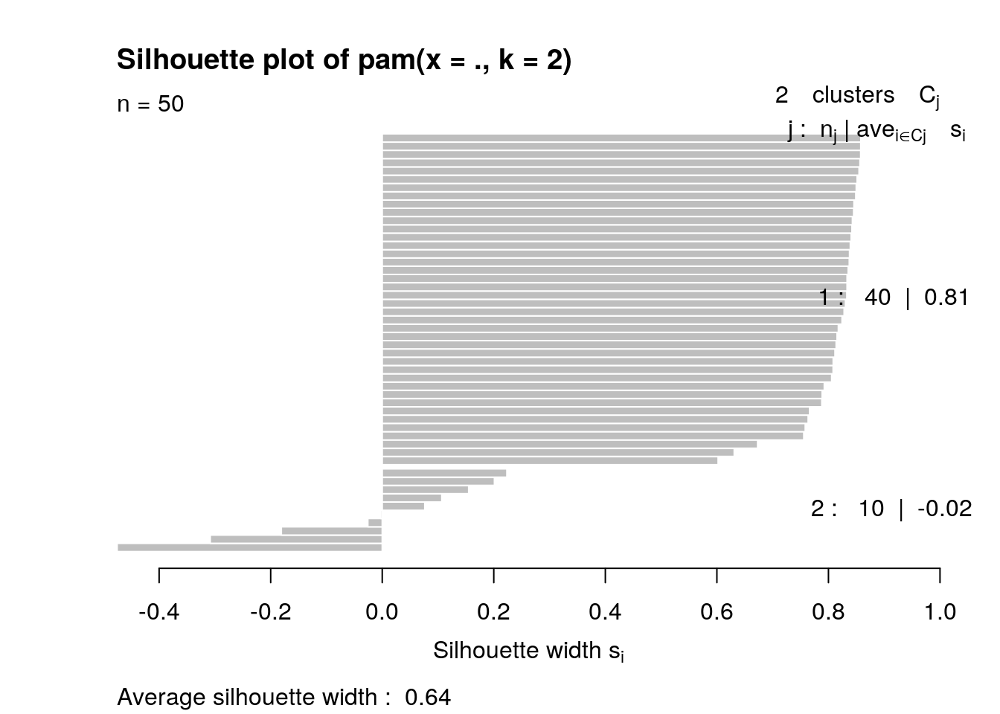

library(tidyverse)
library(dplyr)
library(readr)
countrypops <- read_csv("countrypops.csv")
countrypopulation <- countrypops %>% arrange(year) %>% filter(country_name ==
"India" | country_name == "Canada" | country_name == "Germany" |
country_name == "Argentina" | country_name == "Belgium" |
country_name == "Brazil" | country_name == "China" | country_name ==
"Australia" | country_name == "France" | country_name ==
"Spain") %>% filter(year == "1970" | year == "1980" | year ==
"1990" | year == "2000" | year == "2010") %>% select(year,
country_name, country_code_2, population) %>% rename(Country = country_name,
`Country Code` = country_code_2, Year = year)
countrypopulation## # A tibble: 50 x 4
## Year Country `Country Code` population
## <dbl> <chr> <chr> <dbl>
## 1 1970 Argentina AR 23973058
## 2 1970 Australia AU 12507000
## 3 1970 Belgium BE 9655549
## 4 1970 Brazil BR 95326793
## 5 1970 Canada CA 21324000
## 6 1970 China CN 818315000
## 7 1970 Germany DE 78169289
## 8 1970 Spain ES 33814531
## 9 1970 France FR 52035095
## 10 1970 India IN 553578513
## # … with 40 more rowslibrary(readr)
bankingCrises <- read_csv("bankingCrises.csv")
bankingcrisis <- bankingCrises %>% arrange(year) %>% pivot_longer(c("Algeria",
"Angola", "Argentina", "Australia", "Austria", "Belgium",
"Bolivia", "Brazil", "Canada", "CentralAfricanRep", "Chile",
"China", "Colombia", "CostaRica", "CoteDIvoire", "Denmark",
"DominicanRepublic", "Ecuador", "Egypt", "ElSalvador", "Finland",
"France", "Germany", "Ghana", "Greece", "Guatemala", "Honduras",
"Hungary", "Iceland", "India", "Indonesia", "Ireland", "Italy",
"Japan", "Kenya", "Korea", "Malaysia", "Mauritius", "Mexico",
"Morocco", "Myanmar", "Netherlands", "NewZealand", "Nicaragua",
"Nigeria", "Norway", "Panama", "Paraguay", "Peru", "Philippines",
"Poland", "Portugal", "Romania", "Russia", "Singapore", "SouthAfrica",
"Spain", "SriLanka", "Sweden", "Switzerland", "Taiwan", "Thailand",
"Tunisia", "Turkey", "UK", "Uruguay", "US", "Venezuela",
"Zambia", "Zimbabwe"), names_to = "Country", values_to = "count") %>%
filter(year == "1970" | year == "1980" | year == "1990" |
year == "2000" | year == "2010") %>% filter(Country ==
"India" | Country == "Brazil" | Country == "Canada" | Country ==
"China" | Country == "Germany" | Country == "Belgium" | Country ==
"Argentina" | Country == "Australia" | Country == "France" |
Country == "Spain") %>% select(Country, year, count) %>%
rename(`Banking Crises` = count, Year = year)
bankingcrisis## # A tibble: 50 x 3
## Country Year `Banking Crises`
## <chr> <dbl> <dbl>
## 1 Argentina 1970 0
## 2 Australia 1970 0
## 3 Belgium 1970 0
## 4 Brazil 1970 0
## 5 Canada 1970 0
## 6 China 1970 0
## 7 France 1970 0
## 8 Germany 1970 0
## 9 India 1970 0
## 10 Spain 1970 0
## # … with 40 more rowslibrary(readr)
mvprod <- read_csv("mvprod.csv")
vehicleProduction <- mvprod %>% arrange(year) %>% filter(country ==
"India" | country == "Canada" | country == "Germany" | country ==
"Brazil" | country == "China" | country == "Belgium" | country ==
"Argentina" | country == "Australia" | country == "France" |
country == "Spain") %>% filter(year == "1970" | year == "1980" |
year == "1990" | year == "2000" | year == "2010") %>% select(year,
country, value) %>% rename(`Cars Produced` = value, Year = year,
Country = country)
vehicleProduction## # A tibble: 50 x 3
## Year Country `Cars Produced`
## <dbl> <chr> <dbl>
## 1 1970 Argentina 219599
## 2 1970 Australia 475000
## 3 1970 Belgium 296000
## 4 1970 Brazil 192841
## 5 1970 Canada 1159504
## 6 1970 China 87166
## 7 1970 France 2750086
## 8 1970 Germany 3842247
## 9 1970 India 76409
## 10 1970 Spain 539132
## # … with 40 more rowslibrary(readr)
nkill_byCountryYr <- read_csv("nkill.byCountryYr.csv")
DeathsFromTerrorism <- nkill_byCountryYr %>% pivot_longer(c("1970",
"1971", "1972", "1973", "1974", "1975", "1976", "1977", "1978",
"1979", "1980", "1981", "1982", "1983", "1984", "1985", "1986",
"1987", "1988", "1989", "1990", "1991", "1992", "1993", "1994",
"1995", "1996", "1997", "1998", "1999", "2000", "2001", "2002",
"2003", "2004", "2005", "2006", "2007", "2008", "2009", "2010",
"2011", "2012", "2013", "2014", "2015"), names_to = "year",
values_to = "count") %>% arrange(year) %>% rename(country = X1) %>%
filter(country == "India" | country == "Canada" | country ==
"Germany" | country == "Brazil" | country == "China" |
country == "Belgium" | country == "Argentina" | country ==
"Australia" | country == "France" | country == "Spain") %>%
filter(year == "1970" | year == "1980" | year == "1990" |
year == "2000" | year == "2010") %>% select(year, country,
count) %>% mutate(year = as.numeric(year)) %>% rename(Year = year,
Country = country, `Terrorism Deaths` = count) %>% arrange(Year)
DeathsFromTerrorism## # A tibble: 50 x 3
## Year Country `Terrorism Deaths`
## <dbl> <chr> <dbl>
## 1 1970 Argentina 5
## 2 1970 Australia 0
## 3 1970 Belgium 0
## 4 1970 Brazil 2
## 5 1970 Canada 1
## 6 1970 China 0
## 7 1970 France 0
## 8 1970 Germany 0
## 9 1970 India 0
## 10 1970 Spain 0
## # … with 40 more rowsOverallTable <- countrypopulation %>% full_join(vehicleProduction) %>%
full_join(bankingcrisis) %>% full_join(DeathsFromTerrorism)
OverallTable## # A tibble: 50 x 7
## Year Country `Country Code` population `Cars Produced` `Banking Crises`
## <dbl> <chr> <chr> <dbl> <dbl> <dbl>
## 1 1970 Argent… AR 23973058 219599 0
## 2 1970 Austra… AU 12507000 475000 0
## 3 1970 Belgium BE 9655549 296000 0
## 4 1970 Brazil BR 95326793 192841 0
## 5 1970 Canada CA 21324000 1159504 0
## 6 1970 China CN 818315000 87166 0
## 7 1970 Germany DE 78169289 3842247 0
## 8 1970 Spain ES 33814531 539132 0
## 9 1970 France FR 52035095 2750086 0
## 10 1970 India IN 553578513 76409 0
## # … with 40 more rows, and 1 more variable: `Terrorism Deaths` <dbl>OverallTable_mutated <- OverallTable %>% mutate(`Percent of Population Killed` = (`Terrorism Deaths`/population) *
100) %>% arrange(Year)
OverallTable_mutated## # A tibble: 50 x 8
## Year Country `Country Code` population `Cars Produced` `Banking Crises`
## <dbl> <chr> <chr> <dbl> <dbl> <dbl>
## 1 1970 Argent… AR 23973058 219599 0
## 2 1970 Austra… AU 12507000 475000 0
## 3 1970 Belgium BE 9655549 296000 0
## 4 1970 Brazil BR 95326793 192841 0
## 5 1970 Canada CA 21324000 1159504 0
## 6 1970 China CN 818315000 87166 0
## 7 1970 Germany DE 78169289 3842247 0
## 8 1970 Spain ES 33814531 539132 0
## 9 1970 France FR 52035095 2750086 0
## 10 1970 India IN 553578513 76409 0
## # … with 40 more rows, and 2 more variables: `Terrorism Deaths` <dbl>, `Percent
## # of Population Killed` <dbl>OverallTable %>% group_by(Country) %>% summarize(mean_population = mean(population,
na.rm = T), sd_population = sd(population, na.rm = T), max_population = max(population,
na.rm = T), min_population = min(population, na.rm = T),
median_population = median(population, na.rm = T))## # A tibble: 10 x 6
## Country mean_population sd_population max_population min_population
## <chr> <dbl> <dbl> <dbl> <dbl>
## 1 Argent… 32618005. 6871621. 41223889 23973058
## 2 Austra… 17089770 3722626. 22031750 12507000
## 3 Belgium 10125801. 481039. 10895586 9655549
## 4 Brazil 147584511 40686357. 196796269 95326793
## 5 Canada 27696595. 4987349. 34005274 21324000
## 6 China 1107017000 210594646. 1337705000 818315000
## 7 France 58365738. 5002854. 65027507 52035095
## 8 Germany 79975866. 1913587. 82211508 78169289
## 9 India 880905423. 270807395. 1230980691 553578513
## 10 Spain 39463556. 4689787. 46576897 33814531
## # … with 1 more variable: median_population <dbl>OverallTable %>% group_by(Country) %>% summarize(mean_cars = mean(`Cars Produced`,
na.rm = T), sd_cars = sd(`Cars Produced`, na.rm = T), max_cars = max(`Cars Produced`,
na.rm = T), min_cars = min(`Cars Produced`, na.rm = T), median_cars = median(`Cars Produced`,
na.rm = T))## # A tibble: 10 x 6
## Country mean_cars sd_cars max_cars min_cars median_cars
## <chr> <dbl> <dbl> <dbl> <dbl> <dbl>
## 1 Argentina 331441. 232956. 716540 99639 281793
## 2 Australia 342123. 88237. 475000 243495 347122
## 3 Belgium 811262. 382061. 1248290 296000 923426
## 4 Brazil 1156243. 935237. 2342282 192841 820558
## 5 Canada 1901208. 704844. 2961636 1159504 1947106
## 6 China 4230505. 7885319. 18264761 87166 509242
## 7 France 3095059. 605596. 3768993 2229421 3348361
## 8 Germany 4825990. 941451. 5905985 3842247 4976552
## 9 India 982283. 1468067. 3557073 76409 362655
## 10 Spain 1838983 986702. 3032874 539132 2053350OverallTable %>% group_by(Country) %>% summarize(mean_deaths = mean(`Terrorism Deaths`,
na.rm = T), sd_deaths = sd(`Terrorism Deaths`, na.rm = T),
max_deaths = max(`Terrorism Deaths`, na.rm = T), min_deaths = min(`Terrorism Deaths`,
na.rm = T), median_deaths = median(`Terrorism Deaths`,
na.rm = T))## # A tibble: 10 x 6
## Country mean_deaths sd_deaths max_deaths min_deaths median_deaths
## <chr> <dbl> <dbl> <dbl> <dbl> <dbl>
## 1 Argentina 1.2 2.17 5 0 0
## 2 Australia 0.4 0.894 2 0 0
## 3 Belgium 0.8 1.10 2 0 0
## 4 Brazil 4.8 8.04 19 0 2
## 5 Canada 0.2 0.447 1 0 0
## 6 China 2 2.92 7 0 1
## 7 France 5.4 8.35 20 0 3
## 8 Germany 0.2 0.447 1 0 0
## 9 India 481. 440. 907 0 671
## 10 Spain 35.4 47.6 116 0 29OverallTable %>% group_by(Year) %>% summarize(mean_population = mean(population,
na.rm = T), sd_population = sd(population, na.rm = T), max_population = max(population,
na.rm = T), min_population = min(population, na.rm = T),
median_population = median(population, na.rm = T))## # A tibble: 5 x 6
## Year mean_population sd_population max_population min_population
## <dbl> <dbl> <dbl> <dbl> <dbl>
## 1 1970 169869883. 280447781. 818315000 9655549
## 2 1980 204754893. 342550649. 981235000 9859242
## 3 1990 241903700. 407756393. 1135185000 9967379
## 4 2000 277190677. 469097764. 1262645000 10251250
## 5 2010 306701979. 518478671. 1337705000 10895586
## # … with 1 more variable: median_population <dbl>OverallTable %>% summarize(mean_deaths = mean(`Terrorism Deaths`,
na.rm = T))## # A tibble: 1 x 1
## mean_deaths
## <dbl>
## 1 53.2OverallTable %>% summarize(mean_cars = mean(`Cars Produced`,
na.rm = T))## # A tibble: 1 x 1
## mean_cars
## <dbl>
## 1 1951510.OverallTable %>% summarize(mean_population = mean(population,
na.rm = T))## # A tibble: 1 x 1
## mean_population
## <dbl>
## 1 240084227.library(ggplot2)
correlationmat <- OverallTable %>% select_if(is.numeric) %>%
cor(use = "pair")
tidycorrelations <- correlationmat %>% as.data.frame %>% rownames_to_column("var1") %>%
pivot_longer(-1, names_to = "var2", values_to = "correlation")
tidycorrelations## # A tibble: 25 x 3
## var1 var2 correlation
## <chr> <chr> <dbl>
## 1 Year Year 1
## 2 Year population 0.124
## 3 Year Cars Produced 0.338
## 4 Year Banking Crises 0.221
## 5 Year Terrorism Deaths 0.160
## 6 population Year 0.124
## 7 population population 1
## 8 population Cars Produced 0.269
## 9 population Banking Crises -0.223
## 10 population Terrorism Deaths 0.505
## # … with 15 more rowstidycorrelations %>% ggplot(aes(var1, var2, fill = correlation)) +
geom_tile() + scale_fill_gradient2(low = "red", mid = "white",
high = "blue") + geom_text(aes(label = round(correlation,
2)), color = "black", size = 4) + theme(axis.text.x = element_text(angle = 90,
hjust = 1)) + coord_fixed()
ggplot(OverallTable, aes(x = population, y = `Cars Produced`,
fill = Country)) + geom_point(aes(color = Country, size = Year)) +
scale_size_continuous("Year", range = c(3, 1)) + labs(x = "Population",
y = "Number of Cars Produced Per Year", title = "Number of Cars Produced Per Year versus Population") - This graph shows the relationship between the number of cars produced by a country in a specific year and the population of that country in that specific year. There is a trend that suggest that as time has gone by population and the number of cars produced has tended to increase with the smaller dots being seen more to the right and the top of the graph.By giving each country a different color we are able to see the changes that each country has gone through over time by following their individual dots. China had a very large increase in car production compared to any other country.
ggplot(OverallTable, aes(Country)) + geom_bar(aes(y = `Terrorism Deaths`,
fill = `Banking Crises`), colour = "black", stat = "summary",
fun = mean) + theme(axis.text.y = element_text(angle = 0,
hjust = 1, colour = "blue", size = 7)) + coord_flip() + labs(y = "Average Yearly Deaths Due to Terrorism",
x = "Country", title = "Country versus Average Deaths Due to Terrorism") +
labs(fill = "Banking Crisis Did Not Occur") - In this graph it is very apparent that India has the largest mean deaths due to terrorism. India has also not experienced a banking crisis in the years being studied. The other countries have much lower mean deaths due to terrorism, Spain has the second highest and they have experienced a banking crisis sometime in the years being studied.
cluster_data <- OverallTable %>% select(population, `Cars Produced`,
`Terrorism Deaths`)
library(cluster)
sil_width <- vector()
for (i in 2:10) {
kms <- kmeans(cluster_data, centers = i)
sil <- silhouette(kms$cluster, dist(cluster_data))
sil_width[i] <- mean(sil[, 3])
}
ggplot() + geom_line(aes(x = 1:10, y = sil_width)) + scale_x_continuous(name = "k",
breaks = 1:10)
-I decided to use 2 kmeans to analyze my data because of the results of the silhouette width graph which shows the cohesiveness and separation of the clusters. Therefore the higher the silhouette width is the better, so 2 is chosen to be the number of clusters.
kmeans2 <- cluster_data %>% scale %>% kmeans(2)
kmeans2## K-means clustering with 2 clusters of sizes 4, 46
##
## Cluster means:
## population Cars Produced Terrorism Deaths
## 1 2.2156839 1.3505514 2.8433313
## 2 -0.1926682 -0.1174393 -0.2472462
##
## Clustering vector:
## [1] 2 2 2 2 2 2 2 2 2 2 2 2 2 2 2 2 2 2 2 2 2 2 2 2 2 2 2 2 2 1 2 2 2 2 2 2 2 2
## [39] 2 1 2 2 2 2 2 1 2 2 2 1
##
## Within cluster sum of squares by cluster:
## [1] 41.46402 41.11087
## (between_SS / total_SS = 43.8 %)
##
## Available components:
##
## [1] "cluster" "centers" "totss" "withinss" "tot.withinss"
## [6] "betweenss" "size" "iter" "ifault"kmeanscluster <- cluster_data %>% mutate(cluster = as.factor(kmeans2$cluster))
kmeanscluster %>% ggplot(aes(population, `Cars Produced`, `Terrorism Deaths`,
color = cluster)) + geom_point()
library(GGally)
ggpairs(kmeanscluster, columns = 1:3, aes(color = cluster)) - This set of graphs allows us to see the correlation between each of the variables with eachother. The highest correlation is the positive correlation that exists between population and number of deaths due to terrorism, 0.505. This means that as population increases so does the number of deaths due to terrorism in a year. There is also a positive correlation between population and cars produced but it it fairly weak, 0.269. Then there is a negative correlation between cars produced and terrorism deaths, -0.034. It is a very weak correlation that suggests that more cars produced is associated with less deaths due to terrorism, again weakly.
library(cluster)
pam2 <- OverallTable %>% select(population, `Cars Produced`,
`Terrorism Deaths`) %>% scale %>% pam(k = 2)
pam2## Medoids:
## ID population Cars Produced Terrorism Deaths
## [1,] 15 -0.5407968 -0.2070881 -0.2769029
## [2,] 16 1.8599920 -0.6153972 -0.2769029
## Clustering vector:
## [1] 1 1 1 1 1 2 1 1 1 2 1 1 1 1 1 2 1 1 1 2 1 1 1 1 1 2 1 1 1 2 1 1 1 1 1 2 1 1
## [39] 1 2 1 1 1 1 1 2 1 1 1 2
## Objective function:
## build swap
## 0.8446178 0.8446178
##
## Available components:
## [1] "medoids" "id.med" "clustering" "objective" "isolation"
## [6] "clusinfo" "silinfo" "diss" "call" "data"pamcluster <- cluster_data %>% mutate(cluster = as.factor(pam2$clustering))
pamcluster %>% ggplot(aes(population, `Cars Produced`, `Terrorism Deaths`,
color = cluster)) + geom_point()
pamcluster %>% group_by(cluster) %>% summarize_if(is.numeric,
mean, na.rm = T)## # A tibble: 2 x 4
## cluster population `Cars Produced` `Terrorism Deaths`
## <fct> <dbl> <dbl> <dbl>
## 1 1 51614980. 1787789. 6.05
## 2 2 993961211. 2606394 242.plot(pam2, which = 2) The PAM(partitioning around medoids) average silhouette width of 0.64 shows us that a reasonable structure has been found meaning a decent goodness of fit. This shows us that in general among my data, certain countries at certain years will form decently correlated clusters based on deaths due to terrorist attacks, population, and car production. These three numeric variables are the numeric variables being analyzed in this PAM test as was done using the select() dplyr function. The graph and the silhouette plot show this reasonable structure visibly. The PAM algorithm is different from the other clustering algorithm because it centers the cluster around medoids which are not as sensitive to outliers like means are. Means are used in the initial clustering graphs and are likely to be less accurate at clustering. Medoids are multidimensional medians and therefore less subject to being thrown off by outliers.